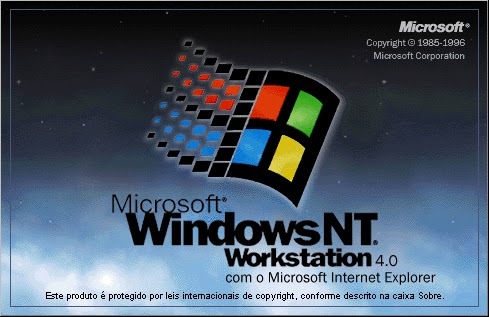
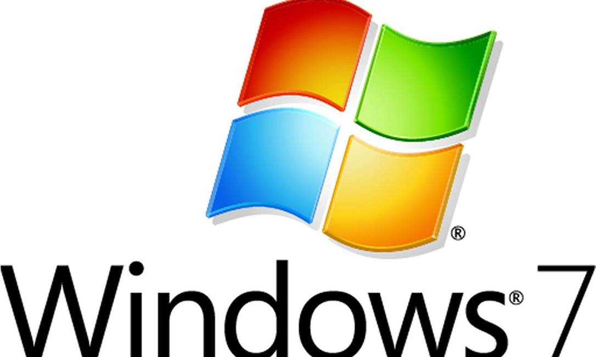

O que é um software?
Um software é um serviço computacional utilizado para realizar ações nos sistemas de computadores. Ou seja: Um software é todo programa presente nos diversos dispositivos (computadores, celulares, televisores, entre outros).
Chrome, calculadora, Windows Media Player, Microsoft Word, AutoCAD, Adobe Photoshop.

O que é Sistema operacional?
O sistema operacional é um software, ou um conjunto de softwares, que tem como papel gerenciar e administrar todos os recursos presentes em um sistema. Isso envolve desde os componentes do hardware e sistemas de arquivos até programas de terceiros.
Linux, Windows, Android, macOS, UNIX.

O que é software de programação?
Softwares de programação são softwares que permitem que programadores criem outros programas, através do uso de linguagens de programação. Eles fornecem ferramentas e soluções para testar, compartilhar, gerenciar e até de facilitar a escrita dos códigos.
Word, Exel, Paint, Bloco de notas, calculadora.
o que é software de sistema?
Software que assegura o funcionamento do computador e permite definir como o utilizador vai interagir com os vários componentes físicos do mesmo e fazer funcionar os vários tipos de programas informáticos.
Windows, Android, iOS.

o que é software de aplicação?
O software de aplicação é criado, em regra, para executar tarefas específicas tal como o processamento de texto, reprodução de áudio. Ao contrário do software de sistema, estas tarefas não são indispensáveis ao normal funcionamento do computador e que só são executa- das a pedido do utilizador.
Chrome, calculadora, Windows Media Player, Microsoft Word, AutoCAD, Adobe Photoshop.

o que é software livre?
Software Livre (Free Software) é um movimento político e filosófico que preza pela liberdade de acesso do código fonte de qualquer software pela comunidade de usuários. Segundo a Free Software Foundation (FSF), qualquer usuário tem o direito de executar, copiar, distribuir, estudar, mudar e melhorar o software.
sistema operacional Linux; linguagens Java e PHP; banco de dados MySQL; programa de escritório LibreOffice (alternativa gratuita do pacote Office da Microsoft); e-mail gratuito Thunderbird.

o que é software Web ou Web App?
O web app é um site responsivo que se comporta como um aplicativo mobile. Nesse caso, ele é executado por meio do próprio navegador, e busca oferecer uma experiência semelhante à aplicação.
Chrome, calculadora, Windows Media Player, Microsoft Word, AutoCAD, Adobe Photoshop.
o que é software de inteligencia artificial?
Os softwares de inteligência artificial, ou software IA, imitam o comportamento humano e os padrões de aprendizado. Um programa de inteligência artificial pode ser utilizado em várias áreas de negócios, desde atendimento ao cliente e vendas (na forma de chatbots) até análise de dados e automação de tarefas de TI.
Chrome, calculadora, Windows Media Player, Microsoft Word, AutoCAD, Adobe Photoshop.
O que é windows 1.0?
O Windows 1.0 trouxe uma interface com cores vibrantes ao usuário, porém somente possível sua reprodução em monitores com cores, pouco comuns à época de seu lançamento. Foi também o primeiro sistema da Microsoft a utilizar Mouse, janelas e ícones. Nesta versão ainda não havia sobreposição de janelas, apenas comandos de "Zoom" para maximizar e "Iconize" para minimizar.
exemplos : Paint, o Bloco de Notas e a Calculadora.
O que é windows 2.0?
Windows 2.0 foi uma interface gráfica de usuário (GUI) entre o sistema operacional Microsoft DOS e o computador, é a segunda versão da família Windows desenvolvido pela empresa norte-americana Microsoft lançado em 9 de dezembro de 1987, sucessor da versao Windows 1.x. Inicialmente, este não era um sistema operacional próprio, era apenas uma interface no modo gráfico que com o auxílio do dispositivo mouse facilitava o uso do computador com sistema MS-DOS, com funcionalidades relativamente limitadas. A primeira tentativa de criar um sistema multitarefa. Foi desenvolvido até versão 2.11. Sendo sucedido pelo Windows 3.x, lançado em 1990.
O que é windows 3.0?
O Windows 3.0 foi lançado em 22 de maio de 1990. Era usado em computadores 286 e 386. A versão 3.0 foi o primeiro sucesso amplo do Windows. Ao contrário das versões anteriores, ele era uma versão completamente nova, porém era um Ambiente Gráfico que rodava sobre o sistema MS-DOS. Nessa época a maioria dos computadores usavam MS-DOS. Ao ligar o computador, iniciava-se esse sistema operacional, para então iniciar o ambiente gráfico Windows, executando o comando "WIN" no prompt do MS-DOS, ou acrescentando o código "C:\Windows\Win" no arquivo de sistema Autoexec.bat para a sua execução automática.[2]
O que é windows 4.0?
é a quarta versão do sistema operacional Microsoft Windows NT, lançado em 1996. É um sistema Windows de 32 bits disponível para estações de trabalho e servidores com interface gráfica semelhante ao Windows 95. Embora oferecesse maior estabilidade do que o Windows 95, era menos flexível do ponto de vista de um computador desktop. Grande parte da estabilidade foi alcançada graças à virtualização do hardware e aos aplicativos que acessavam o sistema através das APIs em vez de usar diretamente o hardware como era feito no MS-DOS, uma prática que continuou com o Windows 95. O uso de APIs em vez do uso direto do hardware exige muito mais trabalho do computador, e alguns aplicativos, como jogos, que fazem uso significativo do hardware, são executados mais lentamente. Embora a maioria dos programas escritos para a API Win32 funcione da mesma forma no Windows 95 e no Windows NT, o suporte insuficiente ao DirectX faz com que a maioria dos jogos 3D não funcione.
O que é windows 5.0?
O Windows CE 5.0 (codinome "Macallan")[1] é o sucessor do Windows CE 4.2, é a terceira versão da família Windows CE NET. Foi lançado em 9 de julho de 2004. Como seus antecessores o Windows CE 5.0 é comercializado para o mercado de dispositivos embarcados e vendedores independentes de dispositivos. Windows CE 5.0 foi anunciado como baixo custo, compacto, rápido-to-market, em tempo real do sistema operacional disponível para x86, ARM, MIPS, e SuperH microprocessador baseado em sistemas. Windows CE 5.0 baseia-se em versões anteriores do Windows CE em sua adoção de código compartilhado.
O que é windows 6.0?
O Windows Embedded CE 6.0 (codinome "Yamazaki")[1] é o principal lançamento da sexta versão do sistema operacional Windows Embedded voltado para empresa de ferramentas específicas, tais como controladores industriais e dispositivos eletrônicos de consumo como câmeras digitais. O CE 6.0 apresenta um kernel totalmente redesenhado, que suporta mais de 32.768 processos, contra suporte para 32-bit em relação ao processo das versões anteriores. Cada processo recebe 2 GB de espaço de endereço virtual, a partir de 32 MB.
O que é windows 7.0?
Windows 7 é uma versão do Microsoft Windows, uma série de sistemas operativos produzidos pela Microsoft para uso em computadores pessoais, incluindo computadores domésticos e empresariais, laptops, tablets e PCs de centros de mídia, entre outros.[4] Windows 7 foi lançado para empresas no dia 22 de julho de 2009, e começou a ser vendido livremente para usuários comuns às 00h00 do dia 22 de outubro de 2009, menos de três anos depois do lançamento de seu predecessor, Windows Vista. Pouco mais de três anos depois, o seu sucessor, Windows 8, foi lançado em 26 de outubro de 2012.
O que é windows 8.0?
O Windows 8 é uma versão do Microsoft Windows, uma série de sistemas operacionais desenvolvidos pela Microsoft para computadores pessoais, laptops e tablets.[4] É o sucessor do Windows 7. Foi anunciado oficialmente por Steve Ballmer, diretor executivo da Microsoft, durante a conferência de pré-lançamento do sistema operacional. O Windows 8 Developer Preview, primeira versão beta do sistema, foi lançado no dia 13 de setembro de 2011 e depois foi seguida pela versão Consumer Preview no dia 29 de fevereiro de 2012.[5] No dia 31 de maio de 2012, foi liberada para download a versão Windows 8 Release Preview. A versão final foi lançada mundialmente em 26 de outubro de 2012.[6] O Windows 8 foi substituído pelo Windows 8.1.
O que é windows 9.0?
O Windows 9 é o novo sistema operacional da Microsoft para desktops e tablets. Também conhecido como Threshold e esperado como Windows 9, o SO vem para unificar plataformas e rodar em todos os devices, de celulares a tablet e de híbridos a computadores desktop. A proposta do Windows 10 é oferecer ao usuário uma abordagem mais simples e amigável de separar dados corporativos e pessoais em todos os dispositivos, mantendo acesso a tudo o que precisa na hora certa. A ferramenta é compatível com todos os softwares de gestão tradicionais, com mais foco empresarial do que nunca.

O que é windows 10.0?
O Windows 10 é uma versão do sistema operacional da Microsoft disponível para download em PC e em notebook. O W10 trouxe uma série de mudanças relevantes na forma como o SO é produzido, distribuído e mantido pela desenvolvedora norte-americana. Há duas versões do Windows 10: Pro ou Home – veja as diferenças e saiba qual versão comprar. Vale lembrar que, em 5 de outubro de 2021, houve o lançamento do Windows 11, sucessor do Windows 10. O novo sistema operacional vem com visual mais limpo e minimalista,
O que é windows 11.0?
O Windows 10 é uma versão do sistema operacional da Microsoft disponível para download em PC e em notebook. O W10 trouxe uma série de mudanças relevantes na forma como o SO é produzido, distribuído e mantido pela desenvolvedora norte-americana. Há duas versões do Windows 10: Pro ou Home – veja as diferenças e saiba qual versão comprar. Vale lembrar que, em 5 de outubro de 2021, houve o lançamento do Windows 11, sucessor do Windows 10. O novo sistema operacional vem com visual mais limpo e minimalista,

Linux Mint
Linux Mint é uma distribuição Linux criada a partir de uma comunidade baseada no Ubuntu. É amada por pessoas usuárias casuais e profissionais na área da tecnologia. Mesmo abandonado o suporte a versão 20 do Snap, o Mint ainda é bem popular.

Linux Ubuntu
Desenvolvido por uma empresa chamada Canonical, o Ubuntu é baseado em um dos muitos derivados do Linux Debian. Esse software chegou ao mercado em 2004. As pessoas programadoras na época perceberam os destaques do sistema e sua facilidade na programação. A interface de linha de comando permitia que fosse usada uma sintaxe mínima para escrever programas. O Ubuntu tem três versões, todas desenvolvidas para diferentes propósitos.

Linux Deepin
Deepin é uma distribuição baseada em Debian (era baseada em Ubuntu até a versão 15 lançada no final de 2015) que tem como objetivo fornecer uma interface elegante, confiável e amigável.

Kali Linux
Offensive Security é a empresa responsável pelo Kali Linux. Ele por si só é uma distro Linux baseada em Debian. Foi projetado para ajudar principalmente profissionais da área de segurança com seus inúmeros testes.

Manjaro Linux
Manjaro Linux é um sistema operacional rápido, amigável e voltado para desktop baseado no Arch Linux. Os principais recursos incluem processo de instalação intuitivo, detecção automática de hardware, modelo de lançamento estável, capacidade de instalar vários kernels, scripts Bash especiais para gerenciamento de drivers gráficos e extensa configurabilidade de desktop.

Linux Debian
Debian é a distribuição mais antiga e mais popular do Linux. Como qualquer outro distro de peso, fornece uma ambientação muito agradável e rápida. Atualmente, sua última versão é a 11, que também é chamada de Bullseye.

Puppy Linux
Puppy Linux é mais uma distribuição Linux. A diferença aqui é que o Puppy é extraordinariamente pequeno, mas cheio de recursos. O Puppy inicializa em um ramdisk e, ao contrário das distribuições de live CD que tem que extrair coisas do CD, ele carrega na RAM. Isso significa que todos os aplicativos começam em um piscar de olhos e respondem à entrada instantaneamente.

Linux OpenSUSE
O OpenSUSE é mais uma das distribuições Linux que tem como objetivo fornecer uma interface moderna e rápida para pessoas usuárias de desktop e desenvolvedoras de todo mundo.

Linux Lite
Linux Lite é uma distribuição Linux amigável para iniciantes baseada no lançamento de suporte de longo prazo (LTS) do Ubuntu e utilizando o desktop XFCE.

MX Linux
MX Linux é uma distribuição Linux feita para desktop baseada na branch “Stable” do Debian e é um empreendimento cooperativo entre o antiX e as antigas comunidades MEPIS Linux.

Linux CentOS
O Linux CentOS é mais um sistema operacional gratuito que tem como objetivo criar um ecossistema de código aberto confiável. Ele é baseado no RHEL, e é uma das alternativas do Red Hat Enterprise Linux por ser gratuito.

Arch Linux
Arch Linux é a distribuição que foi projetada para pessoas usuárias avançadas ou especialistas em Linux. Sendo possível configurar e personalizar o sistema da maneira que a pessoa usuária quiser. Podemos dizer também que o Arch é voltado para pessoas que gostam de ter controle sobre o seu sistema operacional.

Linux Zorin OS
Zorin OS é uma distribuição Linux baseada no Ubuntu projetada especialmente para iniciantes no Linux. Possui uma interface gráfica de usuário semelhante ao Windows e muitos programas semelhantes aos encontrados no Windows.

Linux Slackware
O lançamento oficial do Slackware Linux foi feito por Patrick Volkerding e é um sistema operacional Linux avançado. Foi projetado com o objetivo de ser um sistema fácil de usar e é principalmente estável.

Oracle Linux
O Oracle Linux é uma distribuição Linux para a classe empresarial e é suportada pela Oracle que a constrói a partir dos pacotes do Red Hat Enterprise Linux (RHEL).

Elementary OS
Alguns de seus recursos mais interessantes incluem um ambiente de área de trabalho personalizado chamado Pantheon e muitos aplicativos personalizados, incluindo fotos, músicas, vídeos, calendário, terminal, arquivos e muito mais. Ele também vem com alguns aplicativos familiares como o navegador Epiphany e um fork do Geary Mail.

Linux Fedora
Fedora dentre as distribuições linux é a que mais se destaca por ser realmente simples e prover uma grande quantidade de aplicativos previamente instalados. Isso a torna uma distribuição muito amigável e que facilita a entrada de novas pessoas usuárias. É flexível e poderoso, baseado no Red Hat, também é utilizado como ambiente de teste da transição do Red Hat. Foi feito tanto para sistemas de desktop, servidores e ecossistemas IoT. É utilizado principalmente para fins de desenvolvimento e muito útil para pessoas desenvolvedoras e estudantes.

Tails Linux
O sistema vem com várias aplicações de Internet, incluindo um navegador web, cliente IRC, cliente de e-mail e mensageiro instantâneo, todas pré-configuradas com a segurança em mente e com todo o tráfego anonimizado. Para conseguir isso, o Incognito usa a rede Tor para dificultar o rastreamento do tráfego da Internet.

Linux Raspbian
Nesse sistema, temos um pouco mais de 35.000 pacotes pré-compilados em um formato agradável para fácil instalação em um Raspberry Pi. A primeira versão foi desenvolvida em junho de 2012, mas a distribuição continua ativa, desenvolvida com ênfase na melhoria da estabilidade e desempenho de todos os pacotes Debian possíveis. Embora o Debian produza uma distribuição para a arquitetura arm, ela é compatível apenas com versões posteriores à usada no Raspberry Pi (CPUs ARMv7-A e superiores vs CPU ARMv6 do Raspberry Pi).

Linux Pop!_OS
Pop! _OS é uma distribuição Linux baseada no Ubuntu que utiliza o GNOME como sua área de trabalho personalizada.